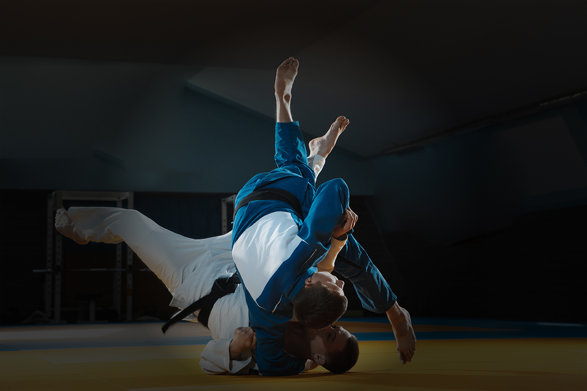

Photographs and video.
Police sport in pictures — the disciplines of the World Police Games and the cities that have hosted the Union, from Bogotá to Santo Domingo.
Gallery
All
Photos
Video
Showing 20 of 20 items